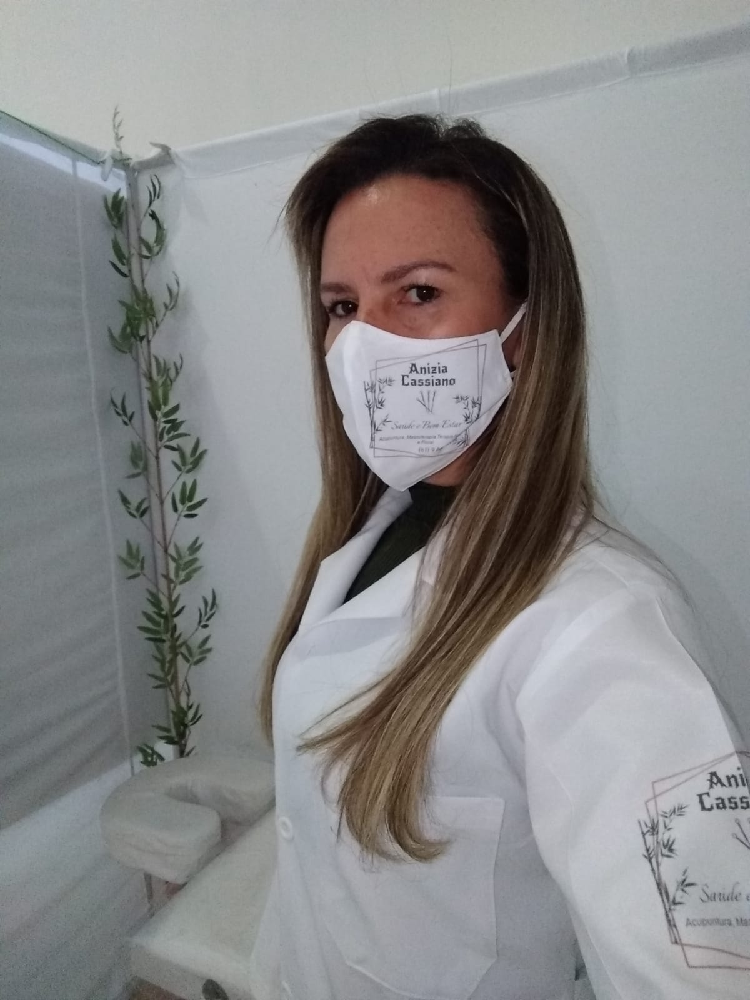

Trabalhos que exerço
Prezo por um atendimento diferenciado, promovendo exelentes resultados para os pacientes.

Anizia Cassiano
Acupunturista
Graduanda em Biomedicina, graduada em radiologia pela JK, pós-graduada em acupuntura pela JK, pós-graduada em acupuntura estética pela Unyleya e terapeuta holista pelo instituto R.S.
Atendimento
O atendimento é aberto para todas as pessoas, independente de classe, raça, gênero ou idade. Proporcionando auto-conhecimento, saúde física e mental.
Estrutura
MEI fundado em 2020, porém atuante na medicina tradicional chinesa com suas terapias alternativas desde 2018.